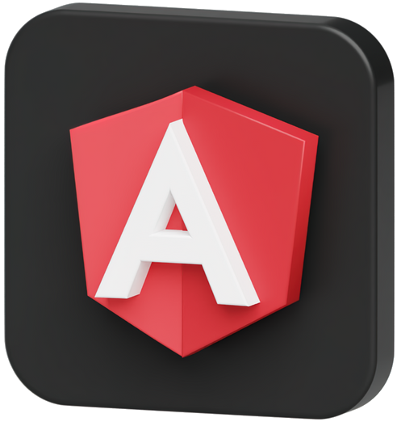

<section class="py-10 bg-main2">
  <div class="container">
    <div class="">
      <div class="w-full flex justify-center flex-col items-center">
        <h2 class="text-4xl text-white Shabnam_Bold_FD">نمونه کار با انگولار</h2>
        <p class="mt-3 max-w-[500px] text-center text-xl text-gray-100 leading-10">من برای نمونه کار انگولار یه ادمین پنل درست ساختم</p>
      </div>


      <div class="grid grid-cols-2 gap-4 mt-8">
        <div class="flex">
          
        </div>
        <div class="flex flex-col items-start justify-center">
          <p class="mt-8 text-xl text-gray-200 leading-10">
            Angular
            یک فریمورک قدرتمند است که پایه محکمی برای ساخت برنامه های کاربردی وب مدرن فراهم می کند. با استفاده از ابزارهای آسان و ویژگی های عالی، توسعه دهندگان می توانند به سرعت برنامه های بسیار کاربردی و تعاملی ایجاد کنند.
          </p>
          <div class="flex gap-3 mt-10">
            <a href="https://github.com/shayan-kolahi/admin-panel" target="_blank" appBtn class="flex items-center gap-2">
              
              لینک نمایش پروژه
            </a>
            <a href="https://github.com/shayan-kolahi/admin-panel" target="_blank" appBtn class="flex items-center gap-2">
              
              سوروس پروژه در گیت هاب
            </a>
          </div>
        </div>
      </div>


    </div>
  </div>
</section>
